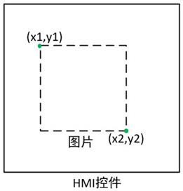

|
类型 |
坐标转换 |
|
描述 |
在HMI自定义控件指定区域内绘制图像，此指令用在自定义控件的绘图函数里。指令将图像缩放匹配到x1,y1,x2,y2指定的区域，x1,y1,x2,y2可以取超出控件范围的值，指令按照原值进行图像适配，适配后超出控件范围的部分不予绘制，并且无副作用（功能可用于对图像放大）  |
|
语法 |
DrawZvObj(obj,x1,y1,x2,y2)
参数： obj：ZVOBJECT类型，输入图像 x1：指定控件绘制区域的左上角x坐标 y1：指定控件绘制区域的左上角y坐标 x2：指定控件绘制区域的右下角x坐标 y2：指定控件绘制区域的右下角y坐标 |
|
适用控制器 |
支持ZV功能或者5系列以上的控制器 |
|
例子 |
ZVOBJECT img ZV_ImgRead(img,"logo.png",0) '以原图像格式读取图像 DrawZvObj(img,0,0,240,180) '在自定义控制左上角坐标(0,0)和右下角坐标(240,180)指定的区域内绘制一个图像img，图像宽高方向将分别进行缩放匹配 |